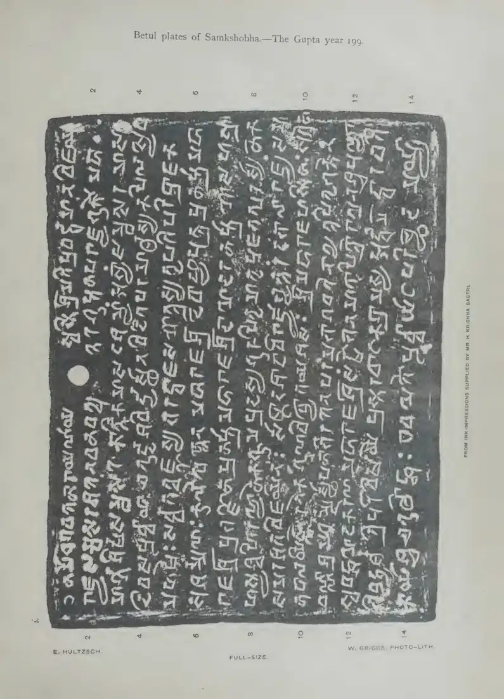
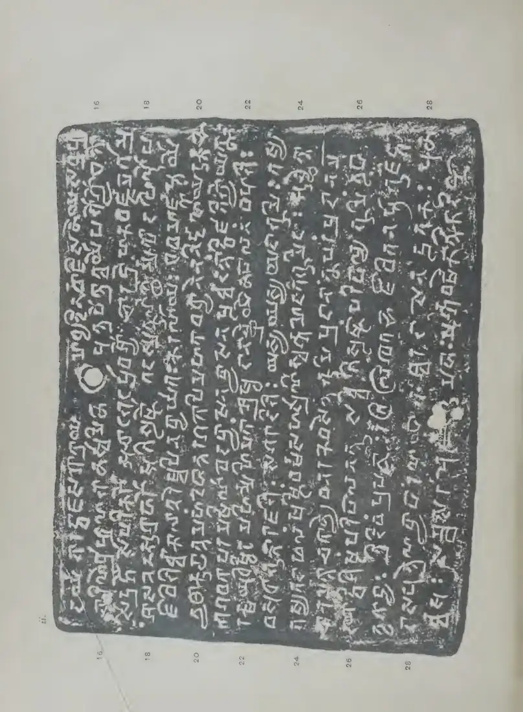

Betul plates of Sankshôbha ; the Gupta year 199
BETUL PLATES OF SAMKSHOBHA;
THE GUPTA YEAR 199.
BY HIRA LAL, B.A., EXTRA ASSISTANT COMMISSIONER; NAGPUR.
These plates were found by me in the possession of Sahib Lal Singh, Malguzar of Betul in the district of the same name in the Central Provinces, in March 1905. Sahib Lal Singh, though belonging to an old respectable family, is a Kurmi— a prominent cultivating caste of Northern India, who of course are not entitled to accept any charitable gifts. The plates clearly do not belong to his family, and Sahib Lal Singh is unable to explain how it came by them. His forefathers belonged to the United Provinces of Agra and Oudh and came to Betul five generations ago. They left their native place in the Unao district in Oudh about 180 years ago and are believed to have lived in the Hoshangâbâd, Narsinghpur and Nâgpur districts. Apparently they brought the plates with them, having obtained them somewhere in Narsinghpur which adjoins Jabalpur.
These are two copper-plates, with a hole ( in diameter) in each for the ring or seal, which is lost. The first plate measures by and the second by , the weight of each being 12 ozs. 6 drs. and 13 ozs. 17 grs. respectively. Both the plates are quite smooth, sufficiently thick, and in an excellent state of preservation. They are inscribed on one side only, and some of the letters show through on the backs of them; and but for a fault in the second plate, which has caused a hole in diameter in the last line, obliterating portions of the numerical symbols of the year (which has been fortunately stated in words in the beginning), the inscription throughout is very legible. I have deciphered the text from the original plates, an impression of which was very kindly made for me by Mr. H. Cousens. At Prof. Hultzsch's instance Mr. H. Krishna Sastri prepared fresh impressions, which are reproduced on the accompanying Plate.
The average size of the letters is about . The letters are smaller— about — at the beginning of each plate. They gradually grow bigger, attaining the highest size— about — at the end.
The characters belong to the northern class of alphabets. Final forms of m occur in ll. 13, 17, 25, and of t in ll. 21 and 25. Orthographical peculiarities are the use of ñ before sa in ll. 12 and 14, and of b for v in sambatsara (ll. 2, 3 (twice), 29) and paribrâjaka (l. 5). The letter t is doubled in gôttra (l. 5, but not in l. 15), puttra (ll. 6, 16, 28), pauttra (l. 16) and opittrôr (l. 12). The last line contains the numerical symbols for 100, 10, 90 and 9, the two last of which, as stated before, are partially obliterated. The language is Sanskrit prose, excepting four benedictive and imprecatory verses quoted in ll. 21-27.
The inscription is one of the Parivrâjaka Mahârâja Samkshôbha and is dated in the year 199 of the Gupta era (A.D. 518-19), in the Mahâmârgaśirsha-samvatsara, on the tenth tithi of the month Kârttika, without specifying the fortnight and the week-day. Another grant of the same king, which was found near Khôh by General Cunningham in 1879 and is dated in the Gupta year 209 (A.D. 528-29), was republished by Dr. Fleet in his Gupta Inscriptions, p. 112 ff. The text of both inscriptions is very similar, and both were written by the same Κvaradâsa.
The object of the inscription is to record the grant of half of the village Prastaravâṭaka and a quarter of Dvâravatikâ in the province of Tripuri by the Mahârâja Samkshôbha to the Brâhman Bhânusvâmin of the Bhâradvâja gôtra. The value of the inscription chiefly lies in the mention of geographical names, as, with regard to the history of the donor himself, it adds nothing new to what is given in the Khôh plates. The genealogy of the Mahârâja Samkshôbha in both
is the same, and in both he is stated to be ruling the Đabhálá-rájya, which had come to him by inheritance together with all the country included in the eighteen forest kingdoms. The present inscription goes to show that Tripurí was a province of the Đabhálá kingdom. We know Tripurí well.1 It was the name of the capital of the Haihayas or Kalachuri kings— the present Tewar, six miles from Jabalpur,— and it apparently also gave its name to the surrounding province. If this be correct, as is very probable, the Kalachuri domination in the country about Jabalpur disappears at least between A.D. 475 and 528, when the Parivrájaka Mahárájas ruled the country, as proved by their inscriptions actually found. The Kalachuris of Ratanpur may have been dominant at that time in Mahákôsala, but not in the northern country about Tripurí. Dr. Fleet says that “ in Đabhálá we have undoubtedly the older form of Đáhala, Đáhála, Đahála or Đahalá, which was in later times a province of the Haihayas or Kalachuris of Tripura near Jabalpur, whose original capital was Kâliñjar.”2 This gives a clue to the identification of Prastaraváťaka and Dváravatikâ, which I take to be the present Patparâ and Dwárâ near Bilahrí, 9 miles from Murwárâ town and about 60 miles from Tewar— the old Tripurí. Prastaraváťaka probably was corrupted into Pattharváťak or Pattharwárâ, which finally became Patparâ, conveying the same meaning in the local patois as its Sanskrit equivalent, viz. ‘a stony tableland,’ and Patparâ is a stony tableland up to this day. On the site of this Patparâ, which had the palace of Kâmkandalâ, there appears to have been formerly a village, as foundations of numerous buildings are still found. Patparâ is only a mile off from Bilahrí, and the ruins of temples and buildings commence at a distance of a quarter of a mile from the present Bilahrí village. That names of villages ending in váťaka or páťaka, which may have been corrupted into wárá or wárá, were common on the Bilahrí side, may be inferred from the Bilahrí inscription,3 which mentions Khailapáťaka. Dhaňgaťapáťaka, Ambipáťaka, etc. One of these, Khailapáťaka, General Cunningham identified with the present Khailwárâ or Kailwárâ, 6 miles from Bilahrí, and I think Dhaňgaťapáťaka is perhaps represented by the present village Thanaurâ, about 4 miles from Bilahrí, the name having been corrupted into Dhanwárâ, Thanwárâ, and finally Thanaurâ. Within a radius of 20 miles from Bilahrí, one may find such villages as Gulwárâ, Murwárâ, Kailwárâ, Nanhwárâ, Kanhwárâ, Bharwárâ, etc., the wárá of which is apparently a corruption of the old váťaka. The village Dwárâ stands on the same tableland as Patparâ, being 5 miles east from the Kâmkandalâ buildings and between 3 and 4 miles from the Bilahrí village. The Malguzar of this village is still a Bráhmañ and has held it for several generations. He does not however belong to the Bháradvája gótra. He is a Garga and may have been engrafted when the male line of Bhánusvámin became extinct, the village going to a female heir and consequently by her marriage to a different gótra, or it may have changed hands since. Dváravatikâ may therefore be confidently identified with this Dwárâ. The six inscriptions of the Parivrájaka Mahárájas were found either at Khôh, Majhgawárn or Bhumarâ, which places are all quite close to Uchchakalpa or the present Uchahrâ, the capital of the Nagode State, where another family, that of the Mahárájas of Uchchakalpa, closely connected with the Parivrájaka Mahárájas both chronologically and territorially, ruled. Uchahrâ is about 60 miles from Bilahrí, and we know from the Bhumarâ pillar inscription, edited by Dr. Fleet 4, that that village formed the boundary between the two territories. This would show that the Đabhálá country was almost co-extensive with the boundaries of the present Jabalpur district to the north and extended to about 120 miles from Tripurí town, the villages granted in the present inscription being situated midway between Tripurí town and the boundary of the Đabhálá kingdom in the north. This will clearly show that the present inscription does not really belong to Betul. As Dr. Fleet remarks (loc. cit.), “ copper-plates, being small and portable, are
1 See General Cunningham's Reports, Vol. IX. p. 54.
2 Gupta Inscr. p. 113 f. In the Vikramdákadévacharita (XVIII. 93 and 95) Đáhála and Đáhala occur almost side by side, indicating that the two forms were indifferently used.
3 Ep. Ind. Vol. I. p. 251 ff.
4 Gupta Inscr. p. 111.
always liable to be carried to a considerable distance from the places to which they properly belong, and can only be applied territorially when the places mentioned in them can be identified.”
One knotty problem however remains yet to be solved. What were the eighteen forest kingdoms included in the Parivrâjaka Mahârâjas' dominions? These must have been contiguous to Đabhâlâ, and as such the choice seems to lie between the ancient Gaur country, latterly known as Gôndwânâ, on the one hand and the Baghêlkhanđ and Chutiâ Nâgpur country together with Chhattisgarh on the other. All this country formed part of the Gupta empire. “The dominion under the direct government of Samudragupta in the middle of the fourth century comprised all the most populous and fertile countries of Northern India. It extended from the Hooghly on the east to the Jumna and Chambal on the west, and from the foot of the Himâlayas on the north to the Narmadâ on the south. Beyond these wide limits, the frontier kingdoms of Assam and the Gangetic delta, as well as those on the southern slopes of the Himâlayas, and the free tribes of Râjputâna and Mâlwâ, were attached to the empire by bonds of subordinate alliance; while almost all the kingdoms of the south had been overrun by the emperor's armies and compelled to acknowledge his irresistible might.”1 With regard to the conquest of South Kôsala or Chhattisgarh and the forest tribes Mr. Smith (op. cit. p. 248) narrates the details thus: “The invader (Samudragupta), marching due south through Chutiâ Nâgpur, directed his first attack against the kingdom of South Kôsala in the valley of the Mahânadî, and overthrew its king, Mahêndra. Passing on, he subdued all the chiefs of the forest countries, which still retain their ancient wildness, and constitute the tributary states of Orissa and the more backward parts of the Central Provinces.” Now these backward parts originally constituted what were known as Athârâgarh, i.e. the eighteen forts or forest kingdoms, to wit, Sakti, Sârangarh, Raigarh, Bâmrâ, Rairâkhol, Sonpur, Patnâ, Bargarh, Phuljhar, Borâ Sâmbhar, Khariâr, Bindrâ Nawâgarh, Sambalpur, Chandrapur, Baud, Athmalik, Gângpur and Bonai. Of these the first eight are still feudatory states, the next four zamîndârîs, and the next two Government khâlsâ, all attached to the Central Provinces.2 On the abolition of the south frontier agency in 1837 Baud and Athmalik were transferred to the control of the Superintendent of the Tributary Mahals of Orissa. Gângpur and Bonai were attached to Chutiâ Nâgpur. Bargarh, being confiscated for rebellion, was given over to the Raja of Raigarh. Again, among the Orissa tributary states there are eighteen garhmâls, though they are somewhat too far away from the Đâhal country. Chhattisgarh, i.e. the thirty-six forts, included twice eighteen forts, viz. eighteen garhs in one group subordinate to the senior branch of the Haihayas ruling at Ratanpur, and the same number in the second group held by the junior branch living at Raipur. So the grouping of states or estates into eighteen would appear to be customary and traditional towards Chhattisgarh. As regards the western Gaur country, which included the present districts of Betul, Chhindwârâ, Seoni and Mandlâ,3 there is no record or tradition of its ever having been divided into eighteen forest kingdoms. It therefore seems very probable that the eighteen forest kingdoms of the inscription lay somewhere in the direction of Chhattisgarh, which was subdued by Samudragupta as mentioned before. As the Parivrâjaka Mahârâjas owed allegiance to the Gupta kings, it seems within the range of probability that those kingdoms were handed over to them, unless they formed part of the Parivrâjakas' dominions before Samudragupta's conquest. It is with the greatest diffidence that I hazard this conjecture, and I am not at present prepared to localise exactly the eighteen forest kingdoms. I however hope that the information, which I have partly acquired from my personal acquaintance with the country, may perhaps prove of some use to an antiquarian willing to solve the question.
1 Mr. V. A. Smith's Early History of India, p. 250 f.
2 Since I wrote the above, Bâmrâ, Rairâkhol, Sonpur, Patnâ, Borâ Sâmbhar and Sambalpur have been transferred to Bengal.
3 General Cunningham's Reports, Vol. IX. p. 150.
Plate 1 is bound after this page.
Plate 2 is bound after this page.
TEXT.1
First Plate.
1 Öîn2 namô [bha]gavatê Nârâyanâya [|*] Svasti [|*] Śrîmati pravarddhamâna-vijaya.
2 râjya(jyê) sambatsara-³șatê navanavaty-uttarê Gupta-na(n ri)pa-râjya-bhuktau Mahâ-
3 mârggaśirsha-sambatsarê4 Kârttika-mâsa-dasamyâm5 asyâm sambatsara-⁶mâsa-
4 divasa-pûrvvâyâ[în*] chaturddaśa-vidyâsthâna-vidita-paramârthasya Kapilasy=êva
5 maharshêh sarvva-tatva(ttva)-jñasya Bharadvâja-sagôttrasya nripatiparibrâ(vrâ)jaka-
6 Suśarmmaṇaĵ kul-ôtpannêna mahârâja-śrî-Dêvâdhya-puttra-pranaptrâ mahâ-
7 râja-śrî-Prabhañjana-pranaptrâ mahârâja-śrî-Dâmôdara-naptrâ gô-sahasra-
8 hasty-asva-hirany-ânêka-bhûma(mi)-pradasya guru-pitrî-mâtrî-pûja(jâ)-tatparasy=ânêka-
9 samara-șata-vijayinaĵ s-âshṭâdaś-âṭavî-râjy-âbhyantaraîn [Da]bhâlâ-râjyaîn sanu-
10 nupâlayi[shṇô]r=anêka-guṇa-vikhyâta-yaśasaĵ śrî-mahârâja-Hastinaĵ sutêna
11 varṇu-âśrama-dharmma-sthâpan-âbhiratêna parama-bhâgavatên=âtyanta-pitrî-bhaktêna
12 sva-vañśa-môda-⁷karêpa mahârâja-śrî-Samkshôbhêna(ṇa) mâtâpittrôr=âtmanaś=cha puny-â-
13 bhivṛiddhy-arthaîn Tripurî-vishayô Prastaravâṭaka-grâmasya9 arddham Dvâravati-
14 kâyâś=cha chaturthô=nśaĵ9 êvam=êtau pûrvv-âghâ ṭa-parichchhêda-maryyâ-
Second Plate.
15 dayâ Bhâradvâja-sagôtrâya Mâdhyandina-Vâji(ja)sanêya-sabra[hma]-
16 chârinê brâhmaṇa-Bhânusvâminê puttra-pauttr-ânvay-ôpabhôgyau10 êtau
17 s-ôdraṅgau s-ôparikarau11 a-châṭa-bhaṭa-prâvaśyau12 chôra-drôhaka-varjjam13 tâmra-
18 śâsanêna14 âgrâhârau atisrishṭau [|*] Tad=asmat-kul-ôtthair=mmat-pâdapiṇd-ôpa
19 jîvibhir=vvâ kâlântarêshv=api na vyâghâtaĵ karaṇiyaĵ [|*] Êvam=âjñâ(jña)pt[ê] yô=
20 nyathâ kuryât=tam=ahaîn dêhântara-gatô=pi mahat=âvadhyânêna nirddahêyaîn [|*]
Uktañ=cha
21 bhagavatâ paramarshiṇâ vêda-vyâsêna Vyâsêna [|*] Pûrvva-dattâm dvijâtibhyô yatnât15
22 raksha Yudhishṭhira [|*] mahi(hî)m=mahimatâm śrêshṭha dânâch=chhrêyô=
nupâlanam[||*] Bahubhiĵ16
23 vasudhâ bhuktâ râjabhiĵ Sagar-âdibhiĵ [|*] yasya yasya yadâ bhûmiĵ17 tasya
24 tasya tadâ phalaîm [||*] Shashṭiîn varsha-sahasrâni svargga(rggê) môdati bhûmi-
daĵ [|*] âchchhêttâ
25 ch=ânumantâ cha tâny=êva narakê vasêt [||*] Bhûmi-pradânân=na paraîn pradânam18
26 dânâd=viśishṭaîn paripâlanan=tu [|*] sarvvê=tisrishṭâm paripâlya bhûmiîn nripâ
27 Nrig-âdyâĵ19 tridivaîn prapannâ iti [||*] Likha/khi)tañ=cha Jîvita-naptrâ Bhujaṅga-
28 dâsa-puttrêna vyâpâraṇayâ20 Îsvaradâsêna [|*] Dûtakaĵ Puna-
29 rvvasuĵ [|*] Sambatsara21 100 [90 9] Mahâĵmargga-varshê22 Kârttika di
10 [||*]
TRANSLATION.1
(Line 1.) Ôm. Reverence to the divine Nârâyaṇa ! Hail ! In the glorious, augmenting and victorious reign, in a century of years increased by ninety-nine, in the enjoyment of sovereignty by the Gupta kings, in the Mahâmârgaśirsha-samvatsara, on the tenth tithi of the month Kârttika,— on this (tithi, specified) as above by the samvatsara, month and day,— by the Mahârâja, the illustrious Sankshôbha, who is born in the family of the kingly ascetic Suśarman, who had learnt the whole truth of the fourteen receptacles of science,2 who, like the great sage Kapila, knew all the first principles,3 (and) who was of the Bharadvâja gôtra ;— who is the great-grandson of the son of the Mahârâja, the illustrious Dêvâdhya ;— who is the great-grandson of the Mahârâja, the illustrious Prabhañjana ;— who is the grandson of the Mahârâja, the illustrious Dâmôdara ;— who is the son of the illustrious Mahârâja Hastin, who was the giver of thousands of cows, of elephants, horses, gold and many lands, who was earnest in paying respect to (his) spiritual preceptor and (his) father and mother, who was victorious in many hundreds of battles, who sought to govern properly the kingdom (râjya) of Đabhâlâ together with (all the country) included in the eighteen forest kingdoms, (and) whose fame was renowned through many good qualities ;— who is intent upon establishing the religious duties of the castes and the different periods of life, who is a most devout Bhâgavata, who is extremely devoted to (his) ancestors,4 (and) who causes the happiness of his own race ;— (by him) — for the purpose of increasing the religious merit of (his) parents and of himself— half of the village Prastaravâṭaka and a quarter of Dvâravatikâ in the province (vishaya) of Tripurî,— in accordance with the usage of the specification of (their) ancient boundaries,— are granted by a copper charter as agrahâras to the Brâhmaṇ Bhânusvâmin of the Bhâradvâja gôtra, a student of the Mâdhyandina-Vâjasanêya (sâkhâ),— to be enjoyed by (his) sons, sons' sons and (further) descendants, with the udraṅga and the uparikara, (and with the privilege that they are) not to be entered by the irregular or the regular troops, with the exception of (the right to fines imposed on) thieves and mischief-doers.
(L. 18.) Therefore even in future times no obstacle (to the enjoyment of this grant) is to be caused by those who are born in Our family, or by My feudatories. This injunction having been given, he who behaves otherwise,— him I will consume with a great contempt, even when I have passed into another body.
(L. 20.) And it has been said by the venerable supreme sage Vyâsa, the arranger of the Vêdas :—
[Here follow four of the customary verses.]
(L. 27.) And (this charter) has been written by virtue of (his) office by Îsvaradâsa, the grandson of Jîvita (and) the son of Bhujangadâsa. The Dûtaka (is) Punarvasu. In the year 100 (and) 90 (and) 9, in the year Mahâmârga[śirsha], on the 10th day of Kârttika.
POSTSCRIPT.
BY PROFESSOR F. KIELHORN, C.I.E. ; GÖTTINGEN.
The date of the above record, being of the month Kârttika of the Gupta year 199, would be expected to fall in A.D. 518, and I shall be able to prove that it did fall in that year. But its exact European equivalent cannot be given with absolute certainty.
1 Since the text is almost identical with that of the Khôh copper-plates of the Gupta year 209, I have adopted, mutatis mutandis, Dr. Fleet's translation as given in his Gupta Inscriptions, p. 115 f.
2 [See Yâjñavalkya, I. 3 :— Purâṇa-nyâya-mîmâmâsâ-dharmasâstr-ânga-miśritâh | vêdâh sthânâni vidyânâm dharmasya cha chaturdaśa ||.—E. H.]
3 [This reference to the (twenty-five) tattvas of the Sânkhya doctrine and to its founder Kapila deserves to be noted.—E. H.]
4 [With the epithet atyanta-pitri-bhaktêna compare pitri-bhaktah, the legend on the seals of the copper-plate grants of the two Kaliṅga kings Nandaprabhañjanavarman and Chaṇdavarman ; above, Vol. IV. p. 143.—E. H.]
In the Gupta year 199, corresponding to the expired year 3619 of the Kaliyuga, a month by the rules of mean intercalation would have had to be intercalated before the month Kârttika. Judging from other dates, I consider it highly probable that in the period to which our date belongs the rules of mean intercalation were observed, and that moreover a month, by those rules intercalated before the proper Kârttika, would have received its name from the preceding month Âśvina. Assuming this to have been actually the case, the Gupta year 199 would have contained only one month called Kârttika, and the month Kârttika which is put down in the date would be the ordinary Kârttika of our Tables. But the possibility is not excluded that the intercalated month might have been called Kârttika too, and in that case the term Kârttika of the date might be taken to denote either the first Kârttika (which would be the month Âśvina of our Tables) or the second Kârttika (i.e. the ordinary Kârttika of the Tables).
At first sight, another difficulty is presented by the circumstance that in line 3 of our record the tithi of the date is simply described as 'the tenth tithi of the month Kârttika' (Kârttika-mása-daśamî), without any indication as to which lunar fortnight the tithi must have belonged to. But this difficulty, in my opinion, is removed by the fact that at the end of the record, where the date is repeated in figures, the same tithi is described by the expression Kârttika-di 10. In the Khôh plates of Sainkshôbha of the Gupta year 209 (Gupta Inscr. p. 114) we find the tithi described, in lines 2 and 3, as Chaitramása-śuklapaksha-trayôdaśi, and in line 24 as Chaitra-di 28; and in the Majhgawâm plates of Hastin of the Gupta year 191 (ibid. p. 107), in line 2 as Mághamása-bahulapaksha-tritiyâ, and in line 20 as Mágha-di 3. The manner in which the Khôh plates are dated has been taken to prove that the month Chaitra of those plates was the pûrnimânta Chaitra; and the dates of both records indicate that it was the custom to quote, when a date was repeated in figures, the number of tithis elapsed since the commencement of the month, irrespectively of the lunar fortnights. Applying this to the date under discussion, we conclude from the statement Kârttika-di 10 that since the commencement of the pûrnimânta Kârttika there had elapsed 10 tithis, or, in other words, that the tenth tithi of the month Kârttika, quoted in line 3, was the 10th tithi of the first or dark half of the pûrnimânta Kârttika (the Kârttika-mása-bahulapaksha-daśamî).
From what has been stated above, it follows that the tithi of our date is the 10th tithi of the dark half of, probably, the pûrnimânta Kârttika of our Tables, but that possibly it may be the 10th tithi of the dark half of the pûrnimânta Âśvina of the Tables. On the first alternative the date would correspond to Monday, the 15th October A.D. 518, when the 10th tithi of the dark half of the pûrnimânta Kârttika ended 8 h. 26 m. after mean sunrise; on the second alternative to Saturday, the 15th September A.D. 518, when the 10th tithi of the dark half of the pûrnimânta Âśvina (i.e., possibly, the first pûrnimânta Kârttika) ended 13 h. 36 m. after mean sunrise. It will be shown now that, in either case, the Jupiter's year in which the date fell was a Mahâ-Mârgaśirsha year, as required by the wording of the original date.
The late Mr. S. B. Dikshit has fully explained that a Mahâ-Mârgaśirsha1 year occurs when Jupiter at his heliacal rising (i.e. his first appearance in the morning after his conjunction with the sun) is in either of the nakshatras Mṛigaśiras and Ârdrâ, i.e., when at his heliacal rising his true geocentric place (or true longitude), according to the equal space system, is between 53° 20' and 80°, according to the Brahma-siddhânta between 52° 42' 20" and 72° 28' 12.5", and according to Garga between 53° 20' and 73° 20'. Now in the time immediately preceding the 15th September (and the 15th October) A.D. 518 Jupiter was in conjunction with the sun at mean sunrise of the 11th May A.D. 518, when his own true longitude was 51° 3', and that of the
1 For the similar years, which have been hitherto found in five inscriptions, see especially the Table in Dr. Fleet's Gupta Inscr., Introduction, p. 105.
sun 51° 2' 52".1 And his heliacal rising after the conjunction took place before sunrise of either the 25th May,2 when his true longitude was 54° 21' (while that of the sun was 64° 23' 35"), or the 26th May, when his true longitude was 54° 35' (while that of the sun was 65° 20' 31"). Whichever of the two days may be absolutely correct, it is clear that before sunrise of the 25th or the 26th May A.D. 518 Jupiter—since his true longitude in either case was more than 53° 20'—by all three systems of the nakshatras rose heliacally in the nakshatra Mṛigaśiras, and that therefore the year which then commenced was a Mahâ-Mârgaśirsha year. That year of course included both the 15th September and the 15th October A.D. 518; for Jupiter's next conjunction with the sun only took place some time before sunrise of the 17th June A.D. 519,3 and his next heliacal rising about the 1st July A.D. 519,4 when a Mahâ-Pausha year commenced. I may add that, according to Mr. Dikshit's calculations, a Mahâ-Mâgha year commenced on the 3rd August A.D. 520, and a Mahâ-Phâlguna year on the 4th September A.D. 521.
The result is that the month Kârttika of the Gupta year 199 which is quoted in the date must have fallen in A.D. 518, and that the date probably corresponds to Monday, the 15th October A.D. 518, but may possibly correspond to Saturday, the 15th September A.D. 518.
1 The calculations which have yielded the above results have all been made according to the Súrya-siddhânta. By the Ârya-siddhânta, at mean sunrise of the 11th May A.D. 518 the true longitude of Jupiter was 51° 43', and that of the sun 51° 4' 18'; and at mean sunrise of the 12th May A.D. 518 the true longitude of Jupiter was 51° 57', and that of the sun 52° 1' 86'. This shows that, according to the Ârya-siddhânta, the conjunction would have taken place between one and two hours before mean sunrise of the 12th May A.D. 518.
2 At mean sunrise of the preceding day, the 24th May A.D. 518, the true longitude of Jupiter was 54° 3', and that of the sun 63° 26' 38".
3 At mean sunrise of this day the true longitude of Jupiter was 85° 33', and that of the sun 85° 58' 33".
4 At mean sunrise of this day the true longitude of Jupiter was 85° 45', and that of the sun 99° 18' 3".

